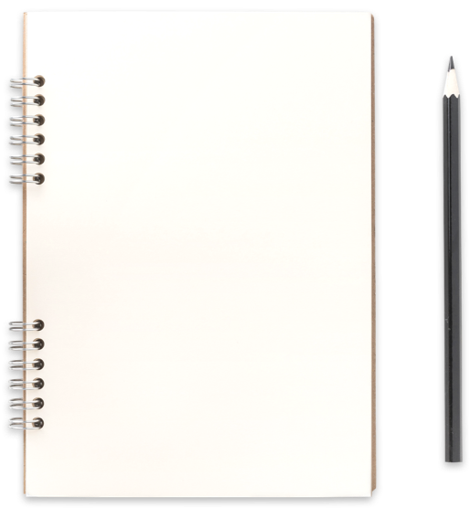
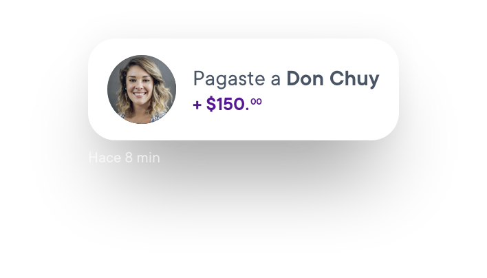

Hola, ¿Cómo podemos ayudarte?
Conoce sobre Tomiin y cómo usarlo


Es un monedero en tu celular. Con Tomiin puedes hacer pagos y envíos de dinero inmediatos sin billetes, monedas ni tarjetas. Sí, desde tu celular. :)
Características
Cuenta de depósito bancario de dinero a la vista en pesos (Nivel 2).
Recibe abonos mensuales al equivalente en pesos de hasta 3,000 UDIs.
No genera intereses o rendimientos.
Modalidad de contratación a través de la App Tomiin.
Cobertura nacional.
Beneficios
Tu dinero siempre disponible.
Acceso gratuito a la App Tomiin.
Realiza todas tus operaciones desde tu celular.
Tu Tomiin tiene una CLABE única e irrepetible de 18 dígitos asignada a una cuenta bancaria, y te funciona para recibir envíos de dinero desde otros bancos.
Usar Tomiin es completamente gratis. Tomiin no te cobra comisiones por enviar, cobrar o recibir dinero.
Debes tener conexión a internet o contar con al menos 1 mega para poder entrar a la app, Tomiin no va a consumir tus datos si quieres hacer envíos, pagar o recibir dinero en tu celular.
Tomiin funciona en cualquier celular con sistema operativo Android, desde la 5.1 o iOS 11. Una vez que te registres podrás entrar con tu número de celular y contraseña desde cualquier dispositivo con la app de Tomiin
Sólo necesitas tu celular, ser mayor de edad y tener a la mano tu INE/IFE o CURP y un correo electrónico.
Requisitos de contratación
Personas físicas nacionales o extranjeros con residencia en territorio nacional.
Edad mínima 18 años.
Tener un celular con acceso a internet.
Descargar la app Tomiin.
La información personal que nos proporcionas está completamente segura y no la compartimos con terceros sin autorización. Conoce más sobre protección de datos en nuestro aviso de privacidad.
Tu cuenta Tomiin está protegida por una contraseña. Además, guardar tu dinero en el celular es más seguro que cargar efectivo. La app se cierra después de 5 minutos y siempre pedirá tu contraseña para entrar.
Tu dinero sigue seguro. Mientras conserves el mismo número de celular podrás acceder a tu cuenta desde tu nuevo teléfono. Tomiin se cierra después de 5 minutos y siempre pedirá tu contraseña para entrar.
Si sufres de algún robo o pérdida puedes seguir utilizando la aplicación desde otro dispositivo, solo es necesario comunicarte con tu compañía celular para recuperar tu número registrado en la app.
Con Tomiin consumidor puedes recibir 3,000.00 UDIS ($18,736.26 pesos calculados desde el 1 enero 2020) en 1 o varios movimientos, pero el acumulado total al mes no debe sobrepasar esa cantidad.
No, Tomiin es más seguro, tu dinero siempre está guardado y disponible en tu celular.
No puedes agregar tus tarjetas de otro banco a la app de Tomiin, puedes usarlas para enviar dinero de tu Tomiin a tu tarjeta y poder retirar el dinero sin comisiones en dicho banco.
No. Lo único que necesitas es tu celular.
Puedes enviar dinero a cualquier banco sin comisiones en tres sencillos pasos:
Abre el menú de tu app y presiona ‘’Enviar a un banco’’
Elige la pestaña “Nuevo” y escribe la CLABE, tarjeta o celular de la persona a la que le quieres enviar
Escribe la cantidad y presiona ‘’Enviar’’
Enviar y recibir dinero en tu Tomiin es rapidísimo y al instante, tarda unos segundos para verse reflejado en tu app.
A veces los envíos de dinero pueden tardar en verse reflejados. Revisa si no estás viendo el envío por:
Recibiste el dinero pero no te ha llegado la notificación porque no estas conectado a internet.
Sobrepasaste la cantidad de dinero que puedes recibir en tu Tomiin cada mes.
Si aún no estás seguro comunícate a la UNE: 55 1720 7272 y 800 808 7272
Escríbenos a: ueau@bancoazteca.com.mx
Aquí podrás encontrar más información sobre aclaraciones de tus movimientos: https://www.bancoazteca.com.mx/ayuda/aclaraciones.html
No te cobramos intereses. :)
Tasa de interés
Tasa Fija de Interés Anual 0.00% antes de impuestos.
Ganancia anual total
GAT Nominal (Ganancia Anual Total Nominal) 0.01%
GAT Real (Ganancia Anual Total Real) -3.33% antes de impuestos.
Cálculo realizado sobre un monto de $1,000 M.N a un plazo de 365 días. Fecha de cálculo 08 de enero de 2020. Vigencia del 08 de enero de 2020 al 08 de julio de 2020. Para fines informativos y de comparación. La GAT Real es el rendimiento que obtendría después de descontar la inflación estimada.
Puedes meter dinero a tu Tomiin de 4 maneras:
Pídele a un contacto con Tomiin que te haga un envío de dinero.
Ve a cualquier negocio afiliado a Tomiin y pide una recarga.
Ve a la ventanilla de Banco Azteca y enséñale al cajero tu código QR.
Haz una transferencia desde cualquier app bancaria con tu cuenta CLABE.
Puedes hacerlo también en estas tiendas con una pequeña comisión:
Chedraui $9 por depósito.
Telecomm Oficinas tradicionales $15 por depósito. Oficinas remotas $50 por depósito.
Envía dinero desde Tomiin en tres pasos:
Entra a tu app de Tomiin y presiona el botón “Enviar a un amig@”
Escoge un contacto o escribe un número nuevo
Escribe la cantidad que quieres enviar y presiona el botón “Enviar”
Puedes retirar tu dinero sin comisiones de dos maneras:
Retira en la ventanilla de Banco Azteca con tu código QR
Hazte un envío usando la CLABE, número de tarjeta o celular asociado de una cuenta de banco que sea tuya. Puedes retirar el dinero en la ventanilla o cajeros de dicho banco
Un código QR es la evolución del código de barras y con la cámara de tu celular podrás conectar con el negocio Tomiin de tu preferencia y pagar desde tu celular.
Puedes hacerlo así:
Abre tu app y presiona ‘’Pagar con QR’’. Tu cámara se abrirá para leer el código QR
Acerca la cámara al código QR impreso en el negocio. Si no está impreso, dile al encargado que seleccione “Cobrar con QR” en su Tomiin
Escribe el monto a pagar y presiona ‘’Enviar’’
Entra a tu app Tomiin y elige la opción “Tiempo aire”.
Agrega el número al que deseas hacer la recarga o selecciónalo dentro de tus contactos frecuentes.
Después, elige la compañía celular y el monto; da clic en “Recargar” y listo.
Entra a tu app Tomiin y selecciona “Pagar servicio”.
Elige el servicio a pagar, escribe la referencia o escanea el código del recibo.
El monto a pagar aparecerá automáticamente.
Da clic en “Pagar” y listo.
Escríbenos a hola@tomiin.app si tienes más dudas.
Para quejas y sugerencias, llama a nuestra Unidad Especializada de Atención a Usuarios.
Ciudad de México y Área Metropolitana: 55 1720 7272
Interior de la República: 800 808 7272
CONDUSEF: 55 5340 0999 y 800 999 8080
Sitio de internet: www.condusef.gob.mx